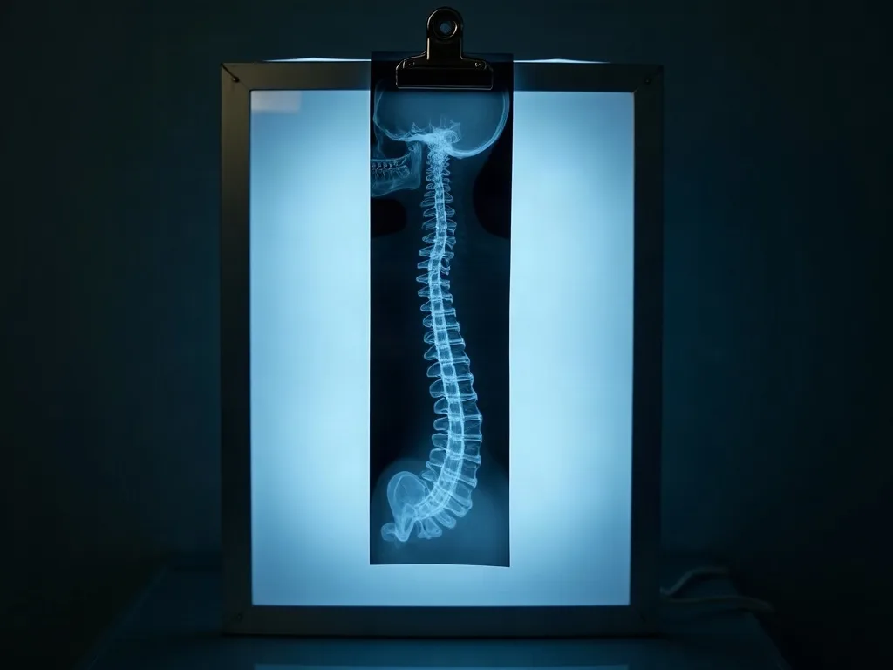

Injured in a car accident in San Rafael?
This page answers the three questions that decide whether you can start care at all: what we examine, how your injury is written down, and how the care gets paid for.
What the delay costs you
Many crash injuries do not announce themselves at the roadside. Soft tissue and facet joint injuries commonly show up a day or more after the collision, once the adrenaline has gone and the inflammation has developed. That is how these injuries tend to behave. It is not a diagnosis of you, and nothing on this page can tell you what is wrong without an examination.
A period between the collision and the first documented examination shows up in the medical record as a gap. Adjusters and defence reviewers routinely read a gap as a sign the injury was minor or unrelated to the crash. Not because the person was not hurt, but because nothing was written down while they were. That is a fact about how records are read, not a warning about what will happen to you.
An early examination produces objective findings, meaning measured ranges of motion, the findings of a structured physical examination, and a written description of how the collision happened. Dated, and held in a record that does not depend on anyone remembering correctly a year later.
The full version of that argument, and what to do in the first days, is on what to do after a crash. The short version sits in the questions people ask.

What you get here
An examination built for a collision.
A structured physical examination, and diagnostic X-ray where it is indicated. You can find out what is actually injured instead of guessing from how it feels. It means the plan of care is aimed at a finding rather than at a symptom.
The paperwork handled.
Insurance verification, lien billing, and coordination with your attorney if you have one. You can start care without becoming your own claims administrator. It means the practical obstacle between the crash and the treatment is taken off your desk.
The injury written down.
Dated objective findings recorded at every visit. You can hand your claim a record that was made while the injury was fresh. It means the account of your injury does not rest on memory.
Each of those describes a process. None of them describes a result. We do not guarantee a recovery, a recovery time, or a claim outcome, and no page on this site will.

The examination, and what comes out of it
01
Intake and history.
How the collision happened: direction of impact, seat position, headrest height, seatbelt, airbag, what hurt at the scene and what hurt the next morning. The mechanism of the force changes what we examine, which is why the questions are specific.
02
Orthopedic and neurological examination.
Ranges of motion measured rather than estimated, orthopedic tests, and a neurological screen of reflex, strength and sensation. Every clinical term you hear in the room gets explained in the room.
03
Diagnostic X-ray, where it is indicated.
X-rays are recommended in some cases and not in others, and if they are recommended you are told what the imaging is being used to rule in or rule out for your specific injury before anything is taken. You can decline. Lead shielding is provided. The cost of any X-ray is given to you in writing, and it appears on your written estimate, before a single image is taken. The full version of this block, including the consent conversation, is on your first visit.
04
The written findings.
What was tested, what was measured, what was found, and the date it was found. Released to your attorney, your insurer or another clinician on your signed authorisation, and to nobody without it.
05
The report for your claim.
A narrative report of your care can be prepared for a personal injury claim. The turnaround and a sample of what the report contains are set out on the narrative report page, and this page does not restate either, so that one figure changes in one place.

What we will and will not claim
This site publishes no star rating, no review count, and no patient volume figure. Not for want of material, but because a number a visitor cannot check is not proof, and this practice is being rebuilt around things you can check.
What you can check: Dr. Michael Perry Joseph appears in the federal CMS provider registry under NPI 1215189410. That is a registry entry. It tells you the practice exists as an enrolled provider, and it is not a verdict on clinical quality, so we do not present it as one.
What you will not find here: a promise about your recovery, a prediction about your claim, or a comparison in which this practice comes out on top. If we do not think we can help you, we will say so and name the kind of clinician you should be seeing instead.
What this replaces
Most chiropractic practices treat the pain and stop there, because for most patients that is the whole job. A crash injury has two more jobs attached to it. It has to be funded, or you cannot start. It has to be documented, or the treatment does not count for anything later.
This practice is organised around those two extra jobs. That is the difference, and it is a difference in what gets organised, not a claim that anyone else is doing it badly. Medication manages pain. Our aim is the mechanical injury causing it. Both have a place, and for some injuries you need both.
How care is paid for
There are five ways care after a collision gets funded, and your case may use more than one.
- MedPay. Medical payments coverage on your own auto policy, if your policy carries it.
- The at-fault driver's liability cover. Paid out at the end, through the claim, not as you go.
- Your own uninsured or underinsured motorist coverage. The UM/UIM rail, which is the one that matters when the other driver has no cover. See what happens when the other driver is uninsured.
- A lien against the personal injury settlement. Care now, paid from the settlement later.
- Self-pay. For a case with no claim behind it.
Auto insurance often covers care after a collision. Coverage depends on your policy and the circumstances of the crash. We will check your benefits and tell you what applies to you before treatment starts. What we will not do is tell you what your insurer is going to decide, because we do not know and neither does anyone who tells you otherwise.
$0 out of pocket to start.
Care here is provided on a lien. You are billed nothing at any point while your case is open, and this practice is paid out of the settlement when the case resolves.
If we do not accept your case, if the case is lost, or if it settles for less than the bill, the balance is written off in full and you owe us nothing.
There is no rate card on this site and no per service price, because the number that matters to you is the one on your own written estimate.
The whole money question is resolved on how care is paid for. Your price in writing comes from the written estimate.
Where to go next
Questions people actually ask
I do not have an attorney. Will you still see me?
Yes. Having a lawyer is not a condition of being treated here. This is a chiropractic practice and not a law firm, so nothing we tell you is legal advice and we do not recommend a firm. If you want the money side first, start at how care is paid for.
What happens if my claim fails?
You are billed nothing. Care is on a lien, so nothing is billed to you while the case is open. If the case is lost, if we do not accept it, or if it settles for less than the bill, the balance is written off in full and you owe us nothing.
The driver who hit me has no insurance.
That is the uninsured motorist rail, and it is the question this market answers worst. It has its own page: what happens when the other driver is uninsured.
Will you tell me the cost before you examine me?
Yes, in writing, before the examination. That is the written estimate.
Do I need X-rays?
Only if they are indicated for your injury. You are told why, you are told the cost in writing first, you can decline, and shielding is provided.
How soon will I be seen?
New auto accident patients are seen the same day. That commitment covers new auto accident patients only. The practice's published opening hours are Tuesday to Friday, 9am to 6pm, and those hours describe when the door is open rather than when any other kind of appointment is available.
If you were hurt in a collision in San Rafael or anywhere in Marin, the next step is an examination and a written estimate, in that order.
Get your estimate in writing55 Mitchell Blvd, Ste 10, San Rafael. Opening hours and directions are on contact.